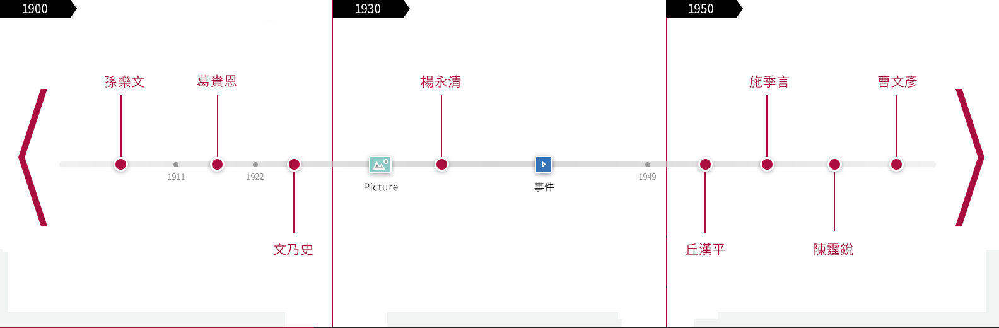

精神Spirit
東吳大學是先有英文校訓，後才有中文校訓。 英文校訓Unto a Full-Grown Man出自新約聖 經以弗所書第四章第十三節，寓意「教育成人」；1929年校政部會議通過楊永清校長提議，以「養 天地正氣，法古今完人」為中文校訓。
我們的軌跡Historical Track
百年的沿革，孕育了東吳的人文、增添了東吳的風貌、滋養了東吳的根基、歷練了東吳的成長…
循著東吳與東吳人劃下的回憶點滴 所刻下的生活軌跡
也猶如讓所有人見證了這一路東吳成長的脈絡
